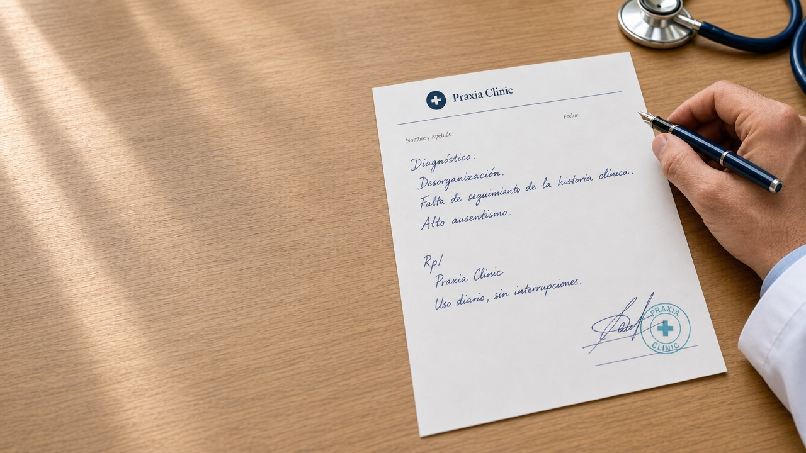
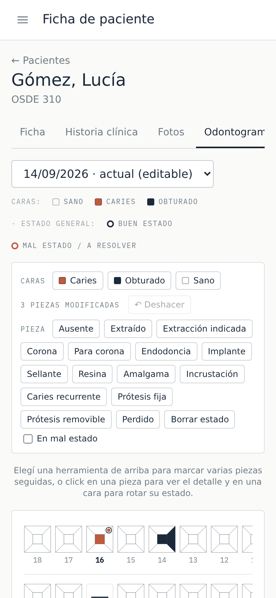

Esencial
1 profesional, que puede ser el mismo admin, y 1 usuario de recepción
USD 20 / mes
¿Atienden 2 o 3? Sumás USD 10 por profesional.
- Migración de pacientes desde Excel
- Puesta en marcha por videollamada
- Soporte por email

Agenda, historia clínica, presupuestos y caja en un núcleo común, más el módulo de tu especialidad: odontograma para odontología, sesiones de FKT para kinesiología. Sin papeles sueltos ni planillas paralelas.
Sin una agenda única por profesional, dos pacientes quedan citados a la misma hora y los huecos libres nunca se ofrecen a nadie.
Carpetas de papel, fotos en el celular del profesional y consentimientos firmados que nadie encuentra cuando hacen falta.
Un turno olvidado es un hueco que ese día ya no se recupera. Sin recordatorio, el ausentismo se paga solo.
A fin de mes nadie sabe con certeza cuánto cobró cada profesional ni cuánto quedó pendiente de cada paciente.
Praxia resuelve lo que comparte todo consultorio y suma lo propio de tu especialidad.
Agenda, recordatorios, historia clínica, presupuestos, caja y analítica funcionan igual en cualquier especialidad. Lo que carga recepción lo ve el profesional, y lo que cobra el profesional aparece en la caja.
Agenda semanal por profesional, con sala de espera en vivo para que recepción sepa quién llegó y quién sigue.
Recordatorio de turno por WhatsApp sin salir de la agenda: el mensaje ya viene armado con el día, la hora y el profesional.
Evoluciones, fotos, adjuntos y consentimientos en una sola ficha, con la pestaña de tu especialidad al lado.
Presupuesto para el paciente, prestaciones cargadas por el profesional y caja de la clínica con la liquidación de cada uno, todo del mismo lado.
Turnos atendidos, ausentismo y facturación por profesional o por período, para decidir con números y no a ojo.
Desde el celular del profesional o de recepción: agenda del día, ficha del paciente y sala de espera, con el mismo diseño que en la computadora.

Cada consultorio trabaja sobre la misma base y activa el módulo de su especialidad. Ve solo las herramientas que usa, ni una pantalla de más.
Odontograma por pieza y cara, ficha de ATM y seguimiento de ortodoncia, dentro de la misma historia clínica del núcleo.
Plan de sesiones con diagnóstico y objetivo, evolución en cada una y ausencias a la vista para reprogramar sin perder la serie.
¿Tu especialidad todavía no tiene módulo? Praxia funciona igual con el núcleo común: agenda, historia clínica, presupuestos y caja.
Los tres planes traen el núcleo completo, el módulo de tu especialidad y usuarios de recepción incluidos. El precio depende solo de cuántos profesionales atienden.
Probalo 30 días gratis, sin tarjeta: nosotros armamos tu clínica y cargamos tus pacientes.
1 profesional, que puede ser el mismo admin, y 1 usuario de recepción
USD 20 / mes
¿Atienden 2 o 3? Sumás USD 10 por profesional.
Hasta 4 profesionales y 2 usuarios de recepción
USD 45 / mes
¿Son de 5 a 8? Sumás USD 10 por cada uno.
Profesionales y usuarios de recepción ilimitados
USD 90 / mes
Desde 9 profesionales, el precio no sube más.
Compartí tu código. Cuando la clínica que invitaste pague su primer mes, a vos te bonificamos un mes y a ella también. Hasta 12 meses bonificados por año.
Sin permanencia: te das de baja cuando quieras. Pagando el año, llevás 2 meses sin cargo. Precios en dólares; se abonan en pesos al tipo de cambio oficial del Banco Nación del día de facturación, por transferencia o Mercado Pago.
Varias clínicas comparten un mismo sistema, pero ninguna ve un dato de la otra. Aislamiento real, no por configuración: por diseño.
Cada consulta a la base filtra por clínica: ninguna puede leer ni escribir datos de otra, ni por error.
Login con contraseña propia y verificación adicional, para que una contraseña filtrada no alcance.
Copia de la base y de los archivos (radiografías, fotos, adjuntos) todos los días, cifrada y fuera del proveedor principal.
Las evoluciones y los cambios importantes no se editan en silencio: queda registro de quién hizo qué y cuándo.
Contanos tu especialidad y cómo trabajás hoy. Te mostramos Praxia con el módulo que te corresponde, sin compromiso.